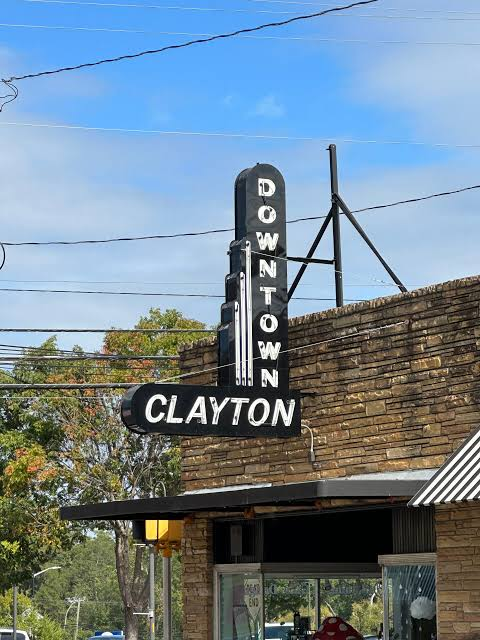

Things to Do
Discover parks, walking trails, local attractions, and activities for the whole family.
Explore Things to DoYour guide to local places, good food, and small-town charm.
Just outside of Raleigh, Clayton offers a welcoming community with local shops, outdoor spaces, and places to enjoy a good meal. Whether you are visiting for the day or looking for something new to explore, there is plenty to discover.

Discover parks, walking trails, local attractions, and activities for the whole family.
Explore Things to DoFind local restaurants, cozy cafes, and spots worth visiting when you are hungry.
Explore Local Dining